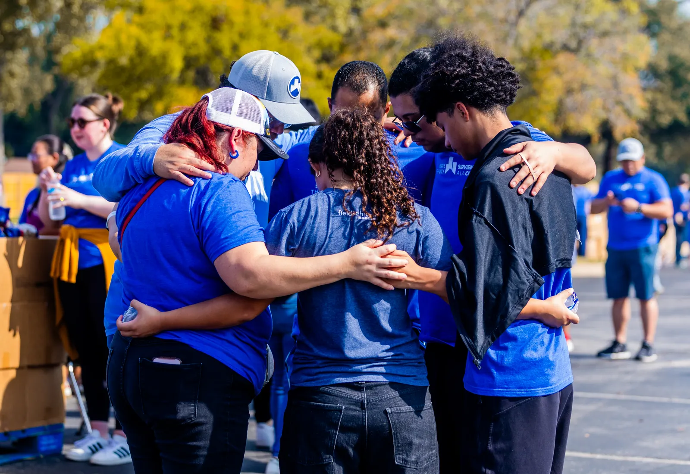

Fortalecer, acompañar e impulsar el desarrollo integral de las iglesias cristianas evangélicas mediante la unidad pastoral, la capacitación, el asesoramiento institucional, la cooperación, el evangelismo y la acción social, contribuyendo al bienestar espiritual y comunitario de la sociedad.
Asociación civil cristiana evangélica
Uniendo iglesias, fortaleciendo ministerios y transformando comunidades.
Acompañamos a las iglesias en su desarrollo espiritual, institucional y social, con unidad pastoral, capacitación y asesoramiento.
Personería jurídica N.º 4831
Alcance nacional
Sin fines de lucro
Quiénes somos
Una red de iglesias que trabaja unida.
Somos una asociación civil cristiana evangélica, sin fines de lucro, que nace con el propósito de integrar, acompañar, fortalecer e impulsar el desarrollo de las iglesias, promoviendo la unidad pastoral, el crecimiento institucional, el evangelismo y el compromiso social.
Trabajamos para brindar herramientas que permitan a las iglesias desarrollar su misión espiritual y comunitaria, acompañándolas en sus necesidades jurídicas, administrativas, financieras, organizacionales y ministeriales.
La unidad no implica uniformidad, sino la capacidad de trabajar juntos en favor de un propósito superior.

Consolidarnos como una organización cristiana de alcance nacional, reconocida por su capacidad de integrar, fortalecer y acompañar a las iglesias, generando una red de cooperación ministerial e institucional que contribuya a la transformación de las personas, las familias y las comunidades.
Nuestros valores
Lo que nos guía.
Nuestra historia
Nace para que ninguna iglesia camine sola.
La Asociación Civil de Pastores Unidos surge como respuesta a la necesidad de construir un espacio de unidad, cooperación y acompañamiento entre las iglesias cristianas evangélicas.
Nace de la convicción de que muchas de las necesidades y desafíos que enfrentan las congregaciones pueden abordarse de manera más efectiva mediante el trabajo conjunto, la organización institucional y el intercambio de recursos y experiencias.
Su propósito es construir una red de iglesias comprometidas con la expansión del Evangelio, la formación de líderes, el servicio comunitario y la transformación de la sociedad, bajo principios de unidad, cooperación y respeto mutuo.
Áreas de trabajo
Cómo acompañamos a las iglesias.
Desde lo espiritual hasta lo jurídico: herramientas concretas para que cada congregación crezca y sirva mejor a su comunidad.
Donaciones
Sumate a transformar vidas.
Tu aporte nos permite seguir acompañando a quienes más lo necesitan. Podés donar al fondo general o a una obra en particular.
- Pago seguro con Mercado Pago o transferencia.
- Podés donar de forma anónima.
- El aviso llega a donaciones@ con copia a Tesorería.
Obras y campañas
Cada aporte, a la vista.
Cada obra muestra cuánto se necesita, cuánto se juntó y en qué se usó. ACPU las carga y actualiza desde su panel.
Ejemplo · Activo
Comedor comunitario
Localidad a definir · Obra de muestra para ver cómo se verá cada campaña.
$1.240.000 recaudados
de $2.000.000 · 62%
Donar a esta obra
Directorio de iglesias
Encontrá una iglesia cerca tuyo.
Buscá por provincia o localidad. Las fichas de abajo son de ejemplo: se reemplazan con la planilla de iglesias integrantes.
Biblioteca en línea
Recursos para cada ministerio.
Estudios, guías y material de capacitación para leer o descargar. Algunos son abiertos a todos y otros solo para iglesias miembro. Los de abajo son de ejemplo.
Convenios y beneficios
Ser parte tiene beneficios.
ACPU firma convenios para que las iglesias integrantes accedan a servicios y descuentos. Cada beneficio se carga desde el panel con sus condiciones y cómo pedirlo.
Prensa y noticias
Novedades de ACPU.
ACPU fortalece su compromiso con el desarrollo de las iglesias
La Asociación Civil de Pastores Unidos continúa impulsando espacios de cooperación, acompañamiento y fortalecimiento institucional, con el objetivo de brindar herramientas que permitan a las iglesias desarrollar su misión espiritual y social.
Leer más
A través de iniciativas de capacitación, asesoramiento y articulación institucional, ACPU busca contribuir al crecimiento de las congregaciones y potenciar su impacto en las comunidades.
Una nueva plataforma digital al servicio de las iglesias
ACPU avanza en el desarrollo de su nueva plataforma institucional, un espacio que permitirá acercar información, recursos, herramientas de capacitación y servicios a las iglesias integrantes.
Leer más
Esta iniciativa forma parte de una estrategia de modernización institucional orientada a fortalecer la comunicación, facilitar la participación y generar nuevas oportunidades de cooperación.
Comisión Directiva
Quienes conducen ACPU.
Jorge Omar Pejcich
Presidente
Restantes autoridades
Se incorporan según el acta vigente
Adhesión
Sumá tu iglesia a la red.
Completá la solicitud de incorporación con los datos de tu iglesia o congregación y adjuntá la documentación. La administración la evalúa y te contacta: la adhesión no es automática, queda pendiente de aprobación.
- Acompañamiento pastoral e institucional
- Asesoramiento para personería y Registro Nacional de Cultos
- Capacitación, convenios y beneficios
- info@acpu.com.arInformación y consultas generales
- tesoreria@acpu.com.arAdministración económica y financiera
- prensa@acpu.com.arComunicación institucional y medios
- donaciones@acpu.com.arDonaciones y aportes solidarios